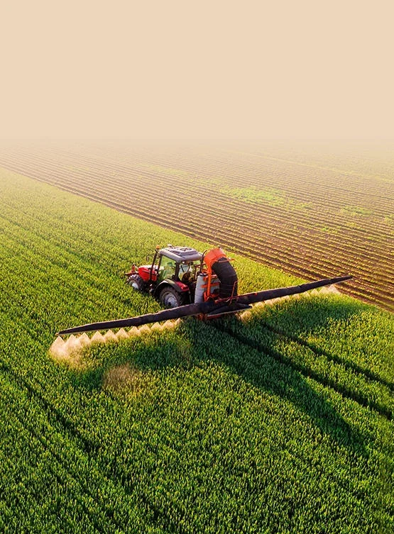

Phosphorus 공급
phosphorus 기여가 표적 분석에 중심 인 양분 정립을 지원합니다.
Crop 영양 솔루션
phosphorus, 칼륨 및 질소 요구 사항 응용 방법, 작물 단계 및 비료 시스템을 개발.

영양분이 전달되는 곳
비료 선택은 필수 영양 비율, 가용성, 수질, 작물 단계, 신청 방법 및 국부적으로 농업 규칙에 달려 있습니다.
적당한 관개 및 도싱 체계를 통해서 양분 납품을 위한 Phosphate 성분 선택권.
02 / FOLIAR수용성 영양소 입력은 농도, 작물 감도 및 살포 겸용성의 주위에 고려됩니다.
03 / WATER-SOLUBLE혼합 영양 배합과 특수 비료를 위한 인, 칼륨 및 질소 공급원입니다.
04 / SOILLESS수질과 호환성이 중요할 수 있는 제어 시스템을 위한 Nutrient-source 토론.
05 / COMPOUND인산염 원료는 영양 분석, 공정 경로 및 완제품 체재의 주위에 선정했습니다.
06 / SPECIALTY원예, 온실 생산 및 단계별 공급 프로그램에 대한 대상 영양 옵션.
영양 목표 시작
유용한 비료 간결은 인산염 소스를 선택하기 전에 영양 기여 및 응용 제약을 정의합니다.
phosphorus 기여가 표적 분석에 중심 인 양분 정립을 지원합니다.
질소를 자동적으로 추가하지 않고 인성 기반 시스템으로 칼륨을 구축하십시오.
필요한 질소-인성 프로파일 주변의 염화 인산염 통로를 선택하십시오.
일치 급료, 용해 행동 및 불순은 예정된 비료 과정에 제한합니다.
최종 제품 선택의 앞에 물 화학, 탱크 파트너 및 정립 PH를 검토하십시오.
Nutrient 통로
이 다섯 원료는 서로 다른 영양 공급 및 배합 경로를 나타냅니다. 이는 적용 가이드이며 제품 규격서나 농업적 시비량 권고가 아닙니다.
phosphorus 및 칼륨 소스는 수용성 비료, 퓨전 및 질소없는 영양 입력이 선호되는 잎 형성에 대해 고려됩니다.
MKP의 다른 pH 프로파일과 함께 인과 칼륨을 요구하는 정립을위한 칼륨 인산염 통로.
영양성분 비율과 공정 특성이 요구 배합에 맞는 비료 시스템에서 사용하는 질소·인 공급원입니다.
다른 질소에 인산소 기여를 가진 염화 인산 염 옵션, 일반적으로 화합물 및 필드 비료 생산을 평가.
칼륨 및 인산 염에 대한 특수 칼륨 pyrophosphate 옵션은 적절한 정립 시스템에 기여하고 급료 및 의도적 사용 요구 사항에 따라 다릅니다.
급료, 명세 또는 패킹 세부사항을 찾고 있습니까?
농업 비료 포트폴리오 보기더 나은 시작
이 세부 사항을 공유하기 때문에 토론은 올바른 인산염 가족과 공급 옵션을 시작합니다.
Nutrient 표적 + 납품 방법 + 물 화학은 인산염 통로를 결정합니다.
용해도, 호환성, 복용량, 작물 응답 및 규제 적합성은 완성 된 비료 및 의도한 사용을 위해 검증되어야합니다.
선적에 필요조건에서
우리는 제품 일치, 문서, 포장 및 수출 조정을 가진 농업 구매자를 지원합니다.
비료 시스템, 영양 요구 사항, 등급 및 대상 시장을 공유합니다.
적당한 인산염 통로, 명세 및 유효한 패킹 선택권을 검토하십시오.
적용 가능한 및 검토 COA, TDS, SDS 및 상업적인 기간을 확인하십시오.
생산, 수출 문서, 포장 및 국제 물류.
구매자 질문
비료 수식자, 유통업체 및 농업 입력 구매자로부터 일반적인 질문에 대한 답변.
MKP는 질소가없는 인과 칼륨에 기여합니다. MAP 및 DAP는 다른 영양소 비율로 질소와 인을 기여하고 다른 정립 및 공정 특성을 가지고 있습니다. 선택은 완성 된 영양 목표와 응용 방법을 따르야합니다.
Suitability는 급료, 가용성, 불순 한계, 물 질, 농도, 작물 감도 및 다른 입력을 가진 겸용성에 달려 있습니다. 화학 이름에 의하여 선택 보다는 오히려 예정된 체계를 공유하십시오.
인산염 겸용성은 칼슘, 마그네슘, 물 경도, 농도 및 PH에 의해, 잠재적으로 강수를 일으키는 원인이 될 수 있습니다. 호환성과 탱크 혼합 순서는 실제적인 사용 조건 하에서 시험되어야 합니다.
일반적인 문서는 제품 사양, 분석, 기술 데이터 시트 및 안전 데이터 시트의 인증서를 포함 할 수 있습니다. 가용성 및 형식은 제품 및 요청 된 등급에 따라 다릅니다.
Multi-product sourcing는 순서 양, 제품 겸용성, 패킹, 수송 분류 및 목적지 필요조건에 지원될지도 모릅니다. 협조한 공급 검토를 위한 완전한 명부를 보내십시오.
신청, 양분 표적, 요구된 급료, 양 및 목적지를 보내십시오. 우리의 팀은 적당한 인산염 공급 선택권을 좁힐 것입니다.